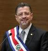
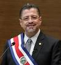

Información de Candidatos Presidenciales
| José María Figueres | Rodrigo Chaves | Fabricio Alvarado | Eliécer Feinzaig |
| Liberación Nacional | Progreso Social Democrático | Nueva República | Liberal Progresista |
 |
 |


| José María Figueres | Rodrigo Chaves | Fabricio Alvarado | Eliécer Feinzaig |
| Liberación Nacional | Progreso Social Democrático | Nueva República | Liberal Progresista |
|
 |
| Bander22a | Candidato | Encuesta 1 | Encuesta 2 |
|---|---|---|---|
| José María Figueres | 27.3% | 27.26% | |
| Rodrigo Chavez | 16.8% | 16.70% | |
| Fabricio Alvarado | 14.9% | 14.82% | |
| Eliécer Feinzaig | 12.4% | 12.33% |